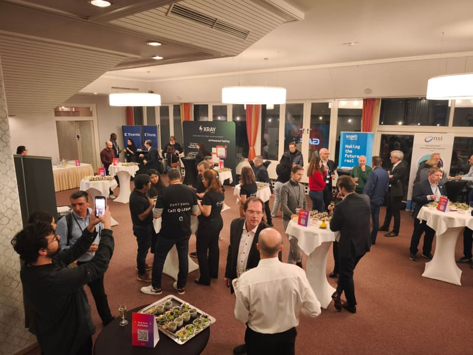
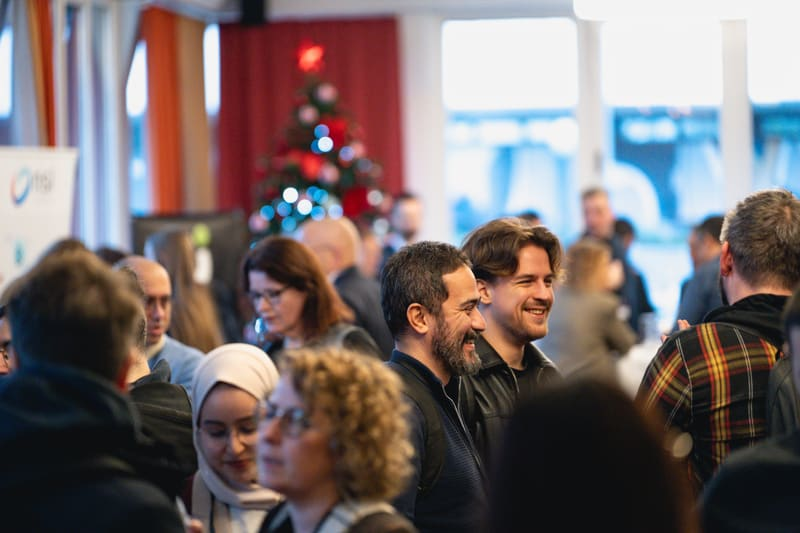
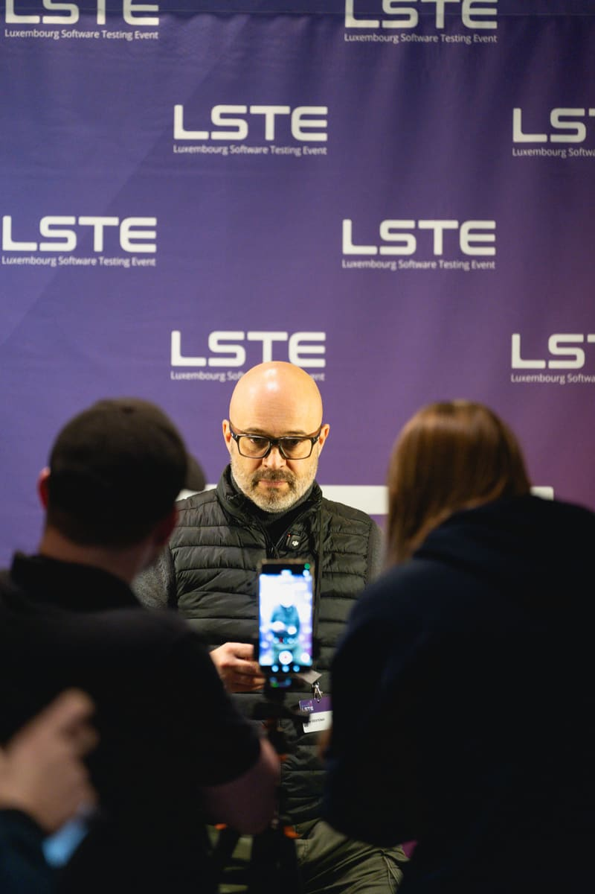
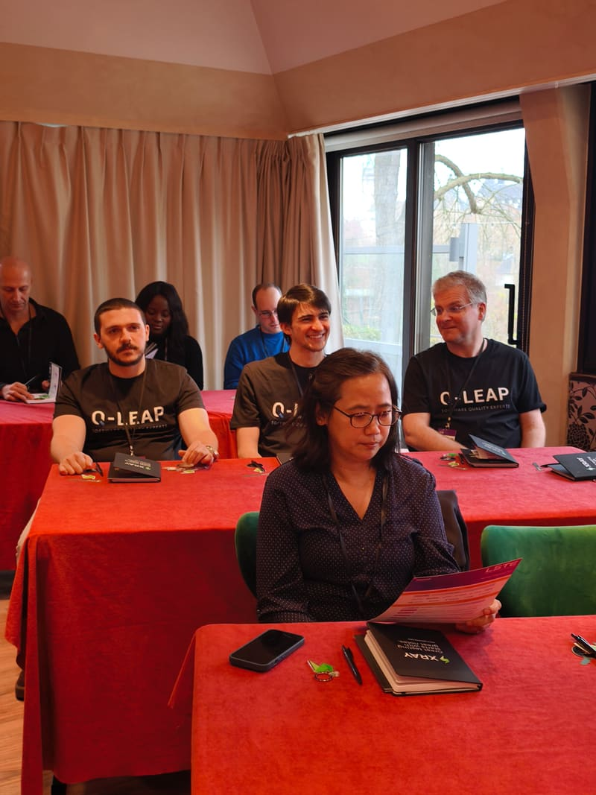

AI & the Future of Quality.
400+ software quality and testing professionals gathered at Parc Belle-Vue for a packed day of insights, demonstrations, and networking.
About the 7th edition
The 7th Luxembourg Software Testing Event brought together over 400 software quality and testing professionals from 60+ organizations for a packed day of insights, demonstrations, and networking.
Under the theme "AI & the Future of Quality," speakers from across Europe explored how artificial intelligence is transforming the way we build, test, and deploy software. From AI-assisted test generation to intelligent defect triage and autonomous quality gates, the 2025 edition showcased the cutting edge of software testing.
Edition details
- Date
27 November 2025 - Venue
Parc Belle-Vue - Attendees
400+ from 60+ organizations - Talks
8 keynotes + 7 demos - Theme
AI & the Future of Quality
What the room was talking about.
AI is here to stay
Testing teams are actively integrating AI for test generation, maintenance, and analysis. It is no longer a future prospect; it is happening in production environments today.
Human skills matter more
As tools automate execution, critical thinking, exploration, and communication become more valuable. The best testers in an AI-augmented world are deeply human in their approach.
Community first
The testing community in Luxembourg is growing stronger with each edition. Shared knowledge, open conversations, and peer learning remain the most powerful tools we have.
Who took the stage.
Tariq King
AI in Testing Pioneer, USA
Maaret Pyhäjärvi
Exploratory Testing Expert, Finland
Bas Dijkstra
Test Automation Coach, Netherlands
Lisi Hocke
Quality Engineering Lead, Germany
Vernon Richards
Quality Coaching, UK
Marie Drake
Test Automation Engineer, UK
Simon Prior
Agile Quality Lead, Ireland
See the moments from LSTE 2025.




